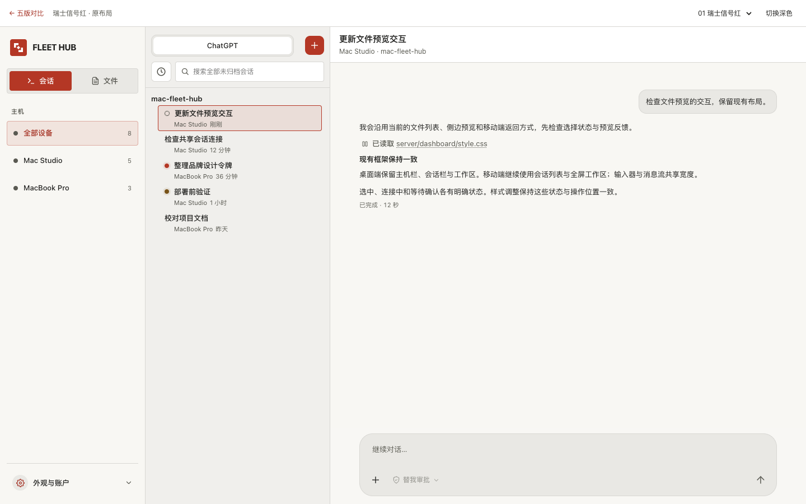
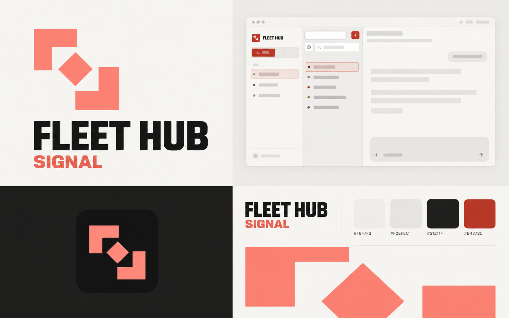

瑞士信号红
直角几何 · 高对比 · 强字重
SIGNAL / FLEET HUB fleet hub
fleet hub
双向转折与中枢：把远程输入、路由与回传压缩成一个标记。
APP ICON
标识
双向转折与中枢：把远程输入、路由与回传压缩成一个标记。
字标
紧凑粗体，无衬线大写；操作态明确、有力度。
材质
平面印刷与硬边分区；小面积信号红。
色彩与界面
保留现有三栏 / 组件位置 / 信息密度

字体与操作
清晰，有序。
正文使用项目系统字体，字号、间距与交互框架沿用原实现。
标记适配
相同几何支持明暗与单色；安装画布保持完整，由系统裁切。
品牌总览
风格展示 · 精确来源为 SVG / 色彩令牌